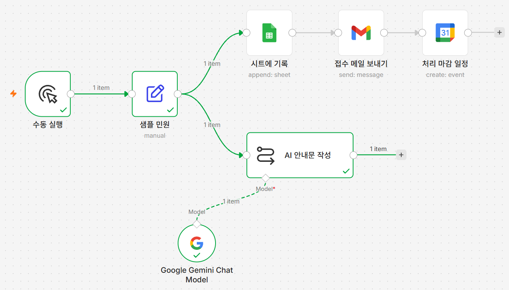
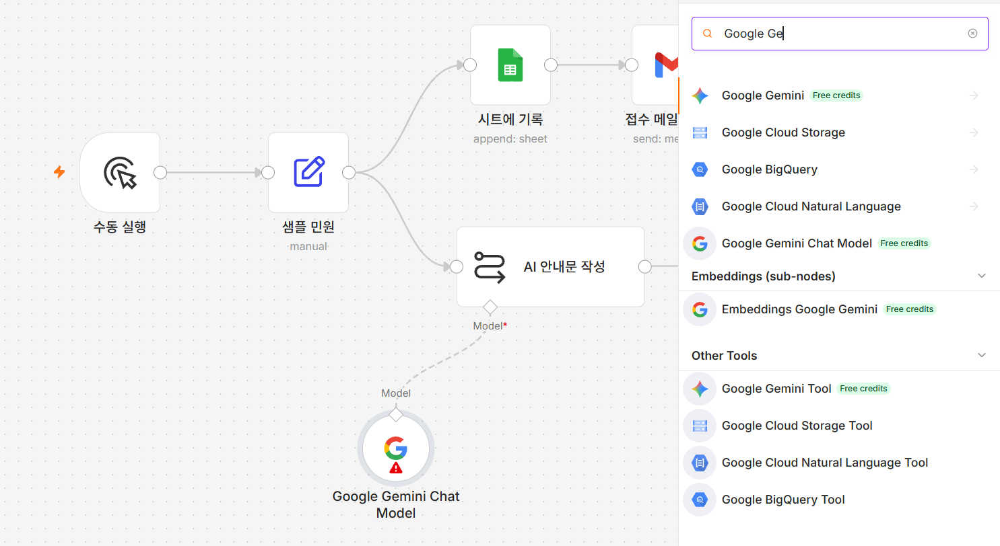
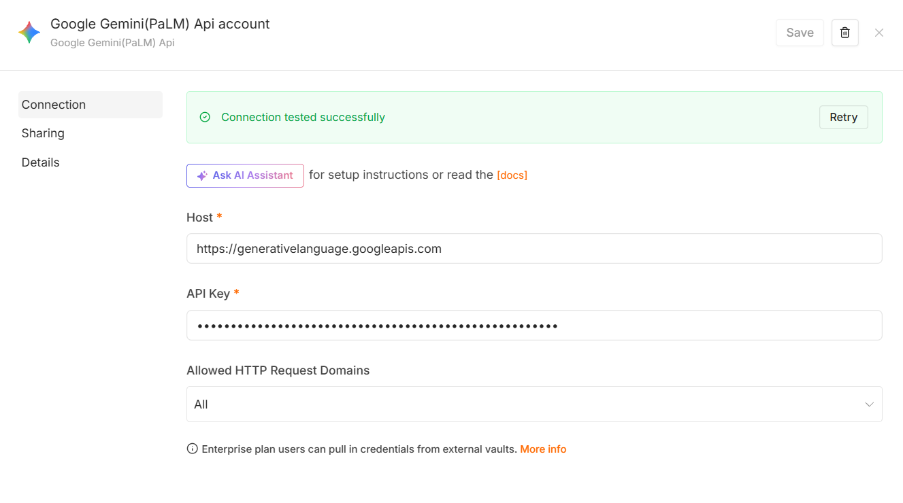
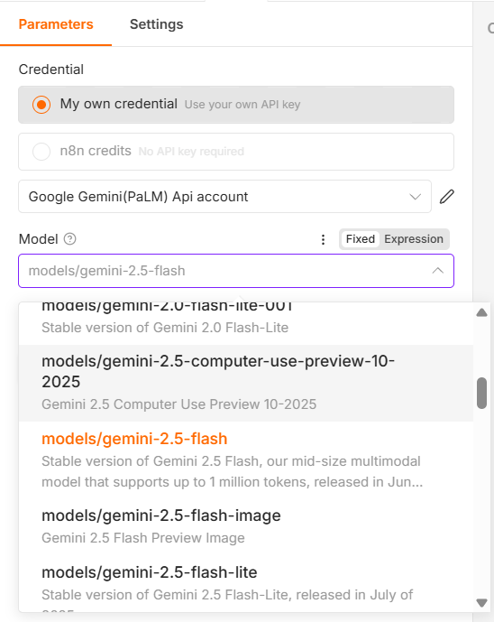

민원 안내문은 결국 비슷한 말입니다. "접수되었습니다", "처리에 다소 시간이 걸릴
수 있습니다", "감사합니다". 그런데 매번 빈 화면에서 처음부터 씁니다.
지난번 것을 복사해오면 편하지만, 앞 민원의 내용이 한 줄 남아 있다가 그대로
나가는 사고가 납니다.
글쓰기에서 가장 오래 걸리는 것은 다듬는 단계가 아니라 첫 문장을 시작하는
단계입니다. 초안이 눈앞에 있으면 고치는 일은 금방입니다. 문제는 그 초안을
누가 쓰느냐였습니다.
이번 시간에는 AI에게 민원 내용을 넘기고 안내문 초안을 대신 쓰게 합니다.
담당자는 백지가 아니라 이미 채워진 글을 읽고 고칩니다. 이것이 이 강좌에서
AI를 쓰는 방식입니다 — 사람을 대신하는 것이 아니라 첫 줄을 대신하는 것.
AI가 쓴 글은 초안입니다. 결재가 아닙니다
AI는 사실이 아닌 내용을 그럴듯하게 쓰기도 합니다. 특히 법령 조항, 처리 기한,
담당 부서처럼 틀리면 안 되는 정보는 반드시 사람이 확인하고 내보내야
합니다. 이 강좌에서도 AI가 쓴 안내문을 자동으로 발송하지 않고, 화면에서 확인만
하는 데까지만 만듭니다.
1일차에서 가장 손이 많이 가는 시간입니다
노드를 두 개 붙여야 하고, 그중 하나는 지금까지와 다른 자리에 붙습니다.
자격증명도 구글 로그인이 아니라 준비물에서 발급받은 API 키를 붙여넣는
방식입니다. 천천히 가세요.
이번 시간에 만들 것
접수된 민원 내용을 바탕으로 Gemini가 담당자용 안내문 초안을 자동으로 작성하는 단계를 추가합니다.
Gemini API 키가 필요합니다
이번 시간부터 Gemini를 사용합니다. 아직 발급받지 못했다면
준비물 ① Gemini API 키 발급을 먼저 보고 오세요.
[그림 6-1] 완성된 모습 — AI 안내문 작성과 그 아래 매달린 Google Gemini Chat Model

이번에 붙는 두 노드는 나란히 놓이지 않습니다.AI 안내문 작성이 다른 노드처럼 옆으로 이어지고,
Google Gemini Chat Model은 그 아래쪽에 점선으로
매달립니다. 점선 옆의 Model이라는 글자가 "이 노드가 모델
자리에 꽂혀 있다"는 표시입니다.
따라하기
이번에는 노드가 두 개 붙습니다
지금까지는 새 노드 하나만 추가했지만, AI를 쓰려면 "무엇을 시킬지"를 맡는
Basic LLM Chain 노드와 "어떤 AI 모델을 쓸지"를 맡는
Google Gemini Chat Model 노드가 짝을 이뤄야 합니다. 아래
순서대로 하나씩 붙입니다.
Basic LLM Chain 노드 추가하기샘플 민원 노드 오른쪽 +를 누르고
Basic LLM Chain을 고릅니다.
이번에도 샘플 민원에서 바로 갈라집니다 —
지금까지와 같은 이유입니다.
모델 연결하기
노드를 캔버스에 놓으면 노드 카드 아래쪽에 Model이라고
적힌 작은 연결 자리(마름모)가 나타납니다. 별표(*)는 반드시
채워야 한다는 뜻입니다. 그 자리를 누르면 오른쪽에 노드 검색창이 열립니다. 검색창에
Google Ge 정도만 입력하면 목록이 좁혀지는데, 그중
Google Gemini Chat Model을 고릅니다.
비슷한 이름이 여럿 나옵니다 — 고를 것은 하나입니다
목록 맨 위의 Google Gemini나 아래쪽
Other Tools의 Google Gemini Tool은
다른 노드입니다. 반드시 Google Gemini Chat Model을
고르세요.
[그림 6-2] 검색 목록에서 Google Gemini Chat Model 고르기

노드가 붙은 직후에는 아직 자격증명이 없어 노드에 빨간 느낌표가
붙습니다. 다음 단계에서 해결됩니다.
Gemini 자격증명 연결하기
새로 붙은 Google Gemini Chat Model 노드를 엽니다. 맨 위
Credential에 고르는 항목이 두 개 있습니다 —
My own credential(내 API 키를 쓰겠다)과
n8n credits(n8n이 주는 체험용 크레딧을 쓰겠다). 준비물에서
키를 발급받았으므로 My own credential을 고릅니다.
그 아래 자격증명 칸에서 Create new credential을 고르면
구글 로그인 화면이 아니라 값을 직접 입력하는 화면이 뜹니다.
API Key 칸에 준비물에서 복사해 둔 Gemini API 키를
붙여넣고 오른쪽 위 Save를 누릅니다.
Host 칸에 이미 채워져 있는
https://generativelanguage.googleapis.com과
Allowed HTTP Request Domains의
All은 그대로 두세요. 고칠 칸은
API Key 하나뿐입니다.저장하면 화면 위에 초록색으로
Connection tested successfully가 뜹니다. 이게 보이면
키가 제대로 들어간 것입니다. 자격증명 이름은
Google Gemini(PaLM) Api account로 자동으로 붙습니다 —
이름에 PaLM이 들어가 있어도 정상입니다.아직 키를 발급받지 못했다면
준비물 ① Gemini API 키 발급을 먼저 보고
오세요.
[그림 6-3] API 키를 넣고 저장해 연결에 성공한 자격증명 화면

모델 직접 고르기
자격증명 칸 바로 아래 Model 칸(드롭다운)을 누르면 목록이
뜹니다. 자동으로 채워진 값을 그대로 두지 말고, 목록에서
models/gemini-2.5-flash를 직접 찾아 고릅니다.
자동으로 채워진 값을 그대로 두면 안 됩니다
n8n 버전에 따라 이름에 preview가 들어간 모델(예:
models/gemini-3-flash-preview)이 기본값으로 미리 채워져
있을 수 있습니다. preview(미리보기) 모델은 구글이 예고 없이 이름을 바꾸거나
없애버릴 수 있어서, 실습 도중 갑자기 오류가 날 위험이 있습니다. 반드시 목록을
열어 models/gemini-2.5-flash를 직접 골라야 합니다.
이름이 비슷한 모델이 줄줄이 붙어 있습니다
목록에는 models/gemini-2.5-flash-image,
models/gemini-2.5-flash-lite,
models/gemini-2.5-computer-use-preview-10-2025처럼
이름이 비슷한 항목이 바로 위아래로 붙어 있습니다. 뒤에 아무것도 붙지 않은
models/gemini-2.5-flash를 골라야 합니다 —
설명이 Stable version of Gemini 2.5 Flash로 시작하는
항목입니다.
목록에 models/gemini-2.5-flash가 안 보이면
자격증명이 아직 제대로 연결되지 않은 것입니다 — 3단계로 돌아가 확인하세요.
[그림 6-4] Model 드롭다운에서 models/gemini-2.5-flash를 고르는 화면

프롬프트 작성하기Basic LLM Chain 노드로 돌아옵니다.
Source for Prompt (User Message) 칸을 눌러
Define below를 고릅니다. 그러면 아래에
Prompt (User Message) 칸이 나타납니다. 아래 내용을 통째로
복사해 그 칸에 붙여넣습니다.
당신은 친절한 시청 민원 담당 공무원입니다. 아래 민원 접수 내용을 바탕으로, 민원인에게 보낼 정중한 '접수 확인 안내문'을 작성해 주세요.
[작성 규칙] - 존댓말을 사용하고, 4~6문장으로 작성합니다. - 민원이 정상적으로 접수되었음을 안내합니다. - 처리에는 다소 시간이 걸릴 수 있음을 부드럽게 안내합니다. - 마지막은 '감사합니다.'로 끝맺습니다.
프롬프트는 세 부분으로 되어 있습니다. 첫 문장은 AI에게
"시청 민원 담당 공무원"이라는 역할을 맡깁니다. [작성 규칙]
부분은 문장 수·말투·마무리 문구 같은 구체적인 지시를 나열합니다.
[민원 접수 내용] 부분은 이중 중괄호로 감싼 표현식으로 실제
민원 데이터를 끼워 넣어, 어떤 민원이 들어와도 같은 프롬프트를 그대로 쓸 수 있게
합니다. 예를 들어 규칙의 "4~6문장으로 작성합니다"를 "2문장으로
작성합니다"로 바꾸면 훨씬 짧은 안내문이 나옵니다.
노드 이름 바꾸기Basic LLM Chain 노드 제목을 더블클릭해
AI 안내문 작성으로 바꿉니다.
실행하고 확인하기
아래쪽 Execute workflow를 누른 뒤
AI 안내문 작성 노드를 클릭해 출력을 확인합니다.
text 항목에 4~6문장의 안내문이 생성되어 있으면 성공입니다.
실행할 때마다 문장이 조금씩 달라지는 것은 정상입니다 — AI가 매번 새로 글을
쓰기 때문입니다.
이 안내문은 이 강좌 안에서는 메일이나 다른 곳으로 자동 전송되지 않습니다 — 지금은
노드 출력 화면에서 확인만 하는 용도로 씁니다.
안 될 때
API 키 오류가 납니다 — 준비물에서 발급받은 키를 다시 확인하세요. 붙여넣을 때
키 앞뒤에 공백이 딸려 들어가지 않았는지도 확인하세요.
할당량 초과 안내가 뜹니다 — models/gemini-2.5-flash 대신
models/gemini-2.5-flash-lite로 바꿔서 계속 진행하세요.
결과가 영어로 나옵니다 — 프롬프트가 제대로 들어가지 않았습니다.
Source for Prompt (User Message)가
Define below로 되어 있는지, 붙여넣은 내용이 통째로 들어가
있는지 확인하세요.
모델 목록에 models/gemini-2.5-flash가 안 보입니다 —
자격증명이 먼저 연결되어야 목록이 채워집니다. 자격증명 연결 단계를 다시
확인하세요.
이번 단계 워크플로우 받기
따라오다 막혔다면 이 파일을 받아 n8n에서 불러오면 이어서 진행할 수 있습니다.
불러온 뒤 반드시 확인하세요
이 파일에는 자격증명이 들어 있지 않습니다. 불러온 뒤 시트에 기록·
접수 메일 보내기·처리 마감 일정·
Google Gemini Chat Model 네 노드를 각각 열어 자격증명을
다시 골라야 합니다(Gemini는 구글 로그인 화면이 아니라 API 키를 새로 입력하는
화면입니다). 시트에 기록의 Document
칸, 처리 마감 일정의 Calendar 칸,
샘플 민원 노드의 이메일 값에는 각각
여기에_본인_시트_ID·본인이메일@example.com
자리표시자가 들어 있으므로 본인 값으로 바꿔야 합니다. 시트 탭 이름은
시트1로 들어 있으니 본인 시트의 탭 이름이 다르면 목록에서
다시 골라야 합니다.